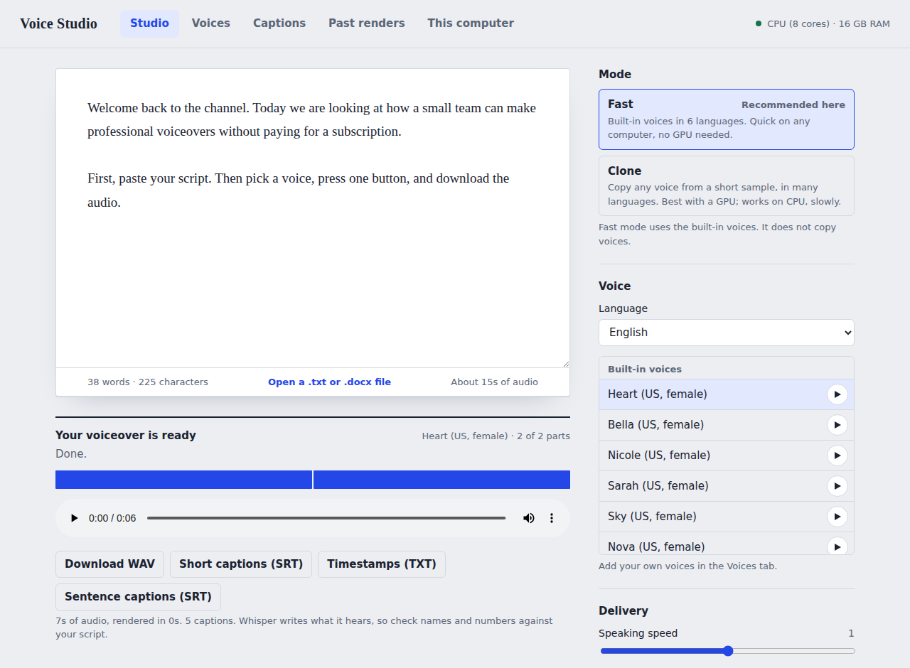
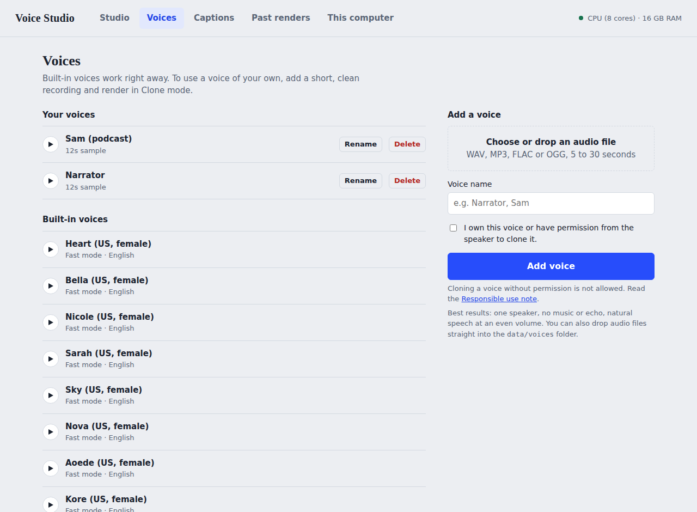
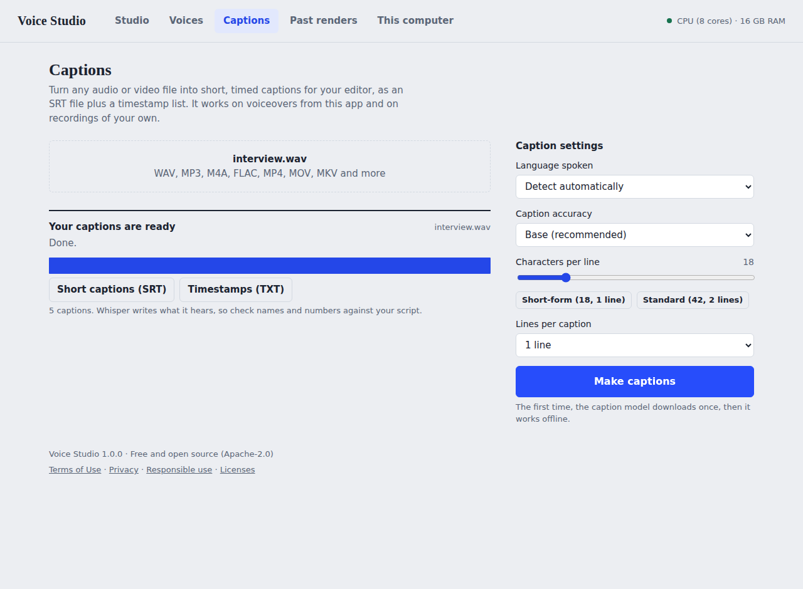

Free voiceovers on your own computer.
Turn a script into spoken audio. No account, no per-minute fees, and nothing leaves your computer.

Three steps
No technical know-how needed.
1. Download and install
Run the installer. The first time you open it, Voice Studio sets itself up, which downloads the voice software and takes a few minutes.
2. Paste your script
Type it, paste it, or drop in a text or Word file. Pick a voice and a language.
3. Make the voiceover
Press one button. Download the audio, and short captions for your video editor if you want them.
What you get
Everything runs on your computer, with or without a graphics card.
Built-in voices
More than 40 voices in English (US and UK), Spanish, French, Hindi, Italian and Portuguese. Quick on an ordinary laptop.
Voice cloning
Copy a voice you have permission to use from a short recording, and speak it in 23 languages, including Arabic.
Short captions
Timed captions for your editor as an SRT file, in short-form style of one line at a time, or standard subtitles.
Made for long scripts
Scripts are rendered in parts with progress and a cancel button. Control pauses, speed and the file type.
Your own voice library
Keep your voices next to the built-in ones, and add more whenever you like.
Private by design
Your scripts, voices and audio stay on your computer. After setup it works without internet.


Why it is free
Many voice services charge by the minute or the month because they run the voices on their own servers. Voice Studio runs open-source voice models on your computer instead, so there is no one to pay and nothing to upload.
What you gain
No subscription, no usage limits, no account, and full privacy. It also works offline.
What it costs you
The best paid services can sound more polished, and rendering uses your computer's power. Cloning in particular is slow without a graphics card. Try it and judge the voices for yourself.
Download
Free, with no sign-up. Pick your system.
If your computer shows a warning
- Windows: "Windows protected your PC" appears for new programs from small publishers. Choose More info, then Run anyway.
- Mac: Open the disk image, drag Voice Studio to Applications, then right-click it and choose Open the first time.
- Linux: Right-click the file, open Properties, tick Allow executing file as program, then double-click it. Or run
chmod +xon it. - First launch: a window shows the one-time setup. It needs internet and takes several minutes. After that, Voice Studio opens in seconds.
Questions
Is it really free?
Yes. Voice Studio is open source under the Apache-2.0 license. There are no ads, no accounts and no paid tier hiding features.
Is it as good as paid services like ElevenLabs?
Not always. The best paid services are generally more polished and faster. Voice Studio's built-in voices are good for narration, explainers and drafts, and cloning is impressive for a free tool. The honest advice is to try a short script and compare.
Do I need a graphics card?
No. Built-in voices run well on an ordinary computer. Cloning also works without one but is slow, so it suits short clips. A graphics card makes it comfortable.
Does it need internet?
Only for the one-time setup and the first use of each voice engine, which download the voice software. Afterwards it works offline.
Can I use the audio in my videos and for clients?
Voice Studio does not claim any rights to the audio you make. The voice models it uses are published under licenses that allow commercial use, but you are responsible for having the right to any voice you clone and for what your script says. This is not legal advice.
Can I clone anyone's voice?
Only a voice that is yours, or that belongs to someone who has agreed. Voice Studio asks you to confirm this, and the cloning model adds an inaudible watermark to its audio. Please read the responsible use note.
Who makes it, and how can I help?
Voice Studio is built by TechFlow so that anyone can make voiceovers without paying for a cloud service. You can help by starring the project, reporting problems, testing languages, translating, or sending a pull request. Questions: myofficialemail89@gmail.com.